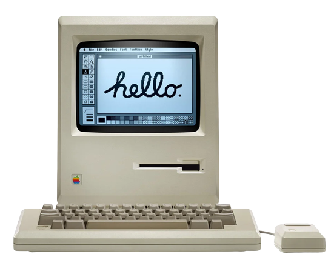

A ten-year-old kid was beginning his high school journey when he had to learn a third language. He was already learning two languages: his mother tongue Hindi and the common-speak English. But neither of them had prepared him for Sanskrit. Masquerading as grammar, he felt the Sanskrit was more mathematical than needed. A language’s purpose is to communicate. If it can communicate, it works. If it works, don’t break it. Chesterton’s Fence
As much as he despised learning the new language, he loved the rhythm of it. Unlike Hindi or English, most Sanskrit literature is composed of hymns and poems. Sanskrit sounds sonorous. नभ: स्पृशं दीप्तम् — the motto of Indian Air Force — sounded so cool that he repeated it over hundred times a day looking at the sky.1 But all of that only improved his pronunciation of Sanskrit hymns. When it came to writing, he was already bad at Hindi, but he was even worse at writing Sanskrit.
After two years of an intense love-hate relationship — hate during exams and love during class — he finally had the option to drop Sanskrit. He expected his woes would improve. But alas, the complaints shifted to Hindi. Now, Hindi was worst and stupid and overtly limited.
A language’s purpose is to communicate. If it can communicate, it works. If it works, don’t break it.
He found respite in classes and always loved listening to literature but dreaded exams. He even wrote the Inter-House Declamations and Debate scripts, though they were full of spelling errors.
Two years later, he finally had the option to drop Hindi as well. Now, all that remained was English. English was simple. There are some 26 letters, you rearrange them to make words. You rearrange words to make sentences. Nothing to worry about मात्रा, हलंत, की या कि and numerous other “minor mistakes”, as he used to call them.
He slowly built up his vocabulary repertoire, learning new words every day. For a brief period, he made a habit to pick up a new word, making a sentence with it and writing it in his diary. He never read them ever, but the act of writing made it enough to remember.
In high school, he met a language that forever shaped his career: C++. He had played with computer languages before: telling LOGO turtle to turn right, take three steps, make a 120-degree left turn, take three steps, make a 120-degree left turn and take another three steps to make an equilateral triangle. But back then, he played with the turtle, not “writing” in a language. At least he didn’t think of it like that.
But C++ was different. It was powerful and could communicate precisely. Furthermore, unlike Sanskrit or Hindi, it had very few grammar rules. If you got the rules, you got the rules. When someone asked “why” about a rule? The only answer was that Tim Berners Lee decided to make it that way. He picked up the rules and started talking to the computer.
Why did I have to write cout<< and not, say, print()? Why are strings stored as an array?
Why could you write something like that means nothing, does nothing and costs nothing?
[](){};It’s a lambda expression that captures nothing, takes no parameters and has no body. It just exists.
Why does it work? Because it’s permitted by some narrowly defined rules.
Talking to computers is straightforward. You say something to the computer, and it either gets it or doesn’t. There is no way a computer would understand things differently than what you said; if it does, you didn’t tell it right. It doesn’t have spatial memory either. A for loop means the same thing in a program that runs an Intel chip as it does in a program that powers Google.
Computers are obedient slaves. Whatever you told them, they did — if they could.2 There was no otherwise. If they couldn’t, they would “fail”. They had no brains.
Then he had an evil plan.
via GIPHY
Uncle Ben said, “with great power comes great responsibility”. Uncle Ben was late in telling this to Spiderman, and our hero hadn’t watched Spiderman anyway. Being young makes you naive. He used his weekly quota of 10-minute internet time to conjure a plan. He would write a code that would specifically delete some executables from Windows c://, breaking the computer irrevocably and requiring a clean reinstall of Windows.
C++ is a powerful language and can communicate precisely. (Looking at you, English!) He started with a program to delete the text file he created. Done. He put the text file in “Program Files” and asked the program to delete it. Done. He made the code delete some files in the “Win32” folder inside the “Program Files”. Once he was confident the code worked, he needed a goat to be slaughtered.
It can’t be his own computer, obviously. His school’s computer lab had about 50 computers, and the class size was 36. That left about 14 computers to be experimented with. All plans ready, he copied the .exe file to a pen drive, would put it in a computer that no one used and saw if it worked.
It damn well worked.
The only problem was that no one cared. The computer was reimaged in less than a week, and Bill’s Windows was back! He thought he’ll have to 1-up his game. Taking inspiration from hacking scenes in a Hollywood movie, he wrote a code that would show exactly this on the screen. (All he remembers about the movie was that the hero had to crack the code to do something important. That required a password, and the hint was what you sit on but never carry with you. The password was “Chair”.)
> ?
_The cursor would keep blinking till you hit 11 keys. Any 11 keys. Unless you press Alt + Ctrl + Del which would bring up the task manager and you’d have to kill the program. He would’ve eliminated the possibility of killing it via the task manager, but the next time he’d get his 10-minute internet time was a month later. And he hadn’t discovered Stackoverflow yet. (Was it even a thing?)
With the backdoor in mind, he combined both tools which made the executable .exe file which will show the black screen waiting for 11 keystrokes and then delete a critical file which would crash the computer. It wasn’t difficult to find which file to delete. Windows has been pretty vulnerable.3
To test this, he needed time and courage. He approached his other cool friend. Someone who knows computers as much as he did. Much to his surprise, that friend was happy to sacrifice his own computer for the experiment! They sat together in front of his computer, double-clicked the .exe file and nervously hit 11 keys after which the program closed.
Nothing happened. They thought nothing had happened. At least, initially. The friend passed unpolitical remarks to our hero. But the hero was confident.
A computer is an obedient slave with no brain. How could it not do what he asked?
But their confusion was quickly gone. The Windows soon gave an error, and it couldn’t boot up. Mission successfully failed!
All was good in Newfoundland till he started college. Now, he had to learn German. Oh, how much he dreaded human languages. Wasn’t English enough?
Not according to the university. They believed “modern leaders need to know international languages, owing to growing interest in internationalisation”. Much to his dismay, German grammar was very similar to Sanskrit grammar. Hate multiplied. He memorised some words that’d be enough for him to pass the exam. He passed by thin margins.
He also realised his English, which he took pride in, wasn’t as good as he thought. Like a frog in the pond, he had little idea of what was happening across the country and the world. Studying with the “bests” (somewhat presumptuous as they declared it themselves, like Britain) at the university showed him a mirror. All his debating and declamation experiences were virtually useless when it came to impromptu speeches. As it turns out, he was just an intelligent parrot.
Realizing his limitations, he approached for help. A professor advised him to start writing and reading extensively. But more than that, start discussing it with others. He liked debating, but now he had to turn it into fruitful discussions. Slowly, he improved.
Around the same time, he encountered another language, masquerading as a statistical tool: R. The name sounded funny — and it was a pun intended by the authors of the language as the first letters of their names. But the language was sans all the void main() crap of C++.
Like here’s a code to print the first ten Fibonacci numbers in C++. (He remembers writing codes differently in Turbo C++. But today, he doesn’t use C++ at all, and that flavour of C++ is not compatible with modern operating systems like MacOS.)
#include <iostream>
using namespace std;
// function to print first "n" Fibonacci numbers
void fibonacci(int n)
{
int f1 = 0, f2 = 1, i;
if (n < 1)
return;
cout << f1 << " ";
for (i = 1; i < n; i++) {
cout << f2 << " ";
int next = f1 + f2;
f1 = f2;
f2 = next;
}
}
// Main function
int main()
{
fibonacci(10);
return 0;
}
0 1 1 2 3 5 8 13 21 34
...Program finished with exit code 0
Press ENTER to exit console.# function to print first "n" Fibonacci numbers
fibonacci = function(n)
{
fibs = numeric(n)
fibs[1] = 0
fibs[2] = 1
for (i in 3:n)
fibs[i] = fibs[i-1] + fibs[i-2]
return(fibs)
}
# Function call
> fibonacci(10)
[1] 0 1 1 2 3 5 8 13 21 34C++ and R differed in one peculiar way: indexing started in C++ with 0 but from 1 in R. He didn’t think much of it then. Later, he realised how R was an outlier. R was succinct in conveying its messages.
Computer was an obedient slave. Now, he had to say fewer words to communicate. And that he did.
He started doing more with the computers soon. His most ambitious C++ project was a railway handling system (the algorithm for which he tells was more complicated to write in this blog). With R he could create the back-end and GUI. He didn’t need to learn JavaScript to use JavaScript. It was as of he didn’t need to learn any C++ to use C++. If he needed something, he could use that.
Unlike Sanskrit, Hindi or German — whose grammar he dreaded — and like C++, R had few and simple rules. Again, all was merry in Newfoundland. He and the computer could understand each other. Many months passed. R and our protagonist became good friends.
A few years later, he met the new cool kid in town, Python. His initial reaction: it’s neither new nor cool and definitely not for kids. (He tells it like he were Dylan from Severance explaining why Optics and Design were cut off from Macrodata Refinement.) Its rules were rather comical. While languages like Ruby were appreciated for their freedom to do things, Python had strict rules on how things should be done.
There should be one — and preferably only one — obvious way to do it.
The writers even added a Zen of Python: a set of 20 axioms that were part programming and life-related.4
Beautiful is better than ugly.
Explicit is better than implicit.
Simple is better than complex.
Complex is better than complicated.
Flat is better than nested.
Sparse is better than dense.
Readability counts.
Special cases aren't special enough to break the rules.
Although practicality beats purity.
Errors should never pass silently.
Unless explicitly silenced.
In the face of ambiguity, refuse the temptation to guess.
There should be one -- and preferably only one -- obvious way to do it.
Although that way may not be obvious at first unless you're Dutch.
Now is better than never.
Although never is often better than *right* now.
If the implementation is hard to explain, it's a bad idea.
If the implementation is easy to explain, it may be a good idea.
Namespaces are one honking great idea -- let's do more of those!The first month was really troublesome. He was irritated by the weird choices of Python developers. Unlike R, there was little documentation and so few examples! But he realised something else: if he kept choosing not to learn it, the language would of course be bad. But once he chooses to try it, it can get better.
And better, it did get.
With concurrent use of two languages R and Python, he sometimes ends up coding R syntaxes in Python and vice-versa. It’s like he’s thinking in two languages. He likes list comprehensions and f-strings but misses the magrittr pipe.
But I guess it’s not too different from how he thinks everything. Some parts are in his mother tongue Hindi while other parts are in English. He prefers English nouns over Hindi nouns, but Hindi verbs over English. He prefers English adjectives over Hindi adjectives but Hindi conjunctions over English. Pretty weird.
Sometimes people don’t believe his mother tongue is not English. Especially native English speakers. Just like he has difficulty explaining Pythonistas that he likes R, though he can speak R as well as Python.
The story doesn’t end. He built something better with every subsequent iteration of improved computing technology that saved him some keystrokes. He learnt and iteratively improved his English while forgetting Hindi due to a lack of practice.
He took on small projects to ensure he didn’t forget how to write Hindi. He published an article in the University Hindi Magazine as an undergrad. He had to use Google’s Hindi Input Tool — his spelling mistakes would’ve only multiplied in these years. Writing by hand was not a good idea.
It took him four hours to write a two-page article. His last fifty Google searches were translating an English word to Hindi.
These days, he’s enjoying generative AI. It’s like he’s found an obedient slave that’s actually intelligent. R requires fewer words than C++, and ChatGPT can simply talk.
These newer systems don’t need him to talk in any one language. He can talk in any language he likes. GPT will connect the dots.
Where would the languages take him next?
Nabh Sparsh Diptam stands for “Touch the Sky with Glory”. He knew he wanted to be an Air Force pilot. He failed a flight simulation test for which can’t retry. https://afcat.cdac.in/AFCAT/motto.html↩︎
If Deathnote’s notebook could have rules, this could certainly have rules.↩︎
Apple used to have multiple security touch points in place. Gatekeeper would require extensive permissions (chown anyone?). Windows had a more lax attitude. Things have changed now and both are pretty secure. I don’t think our hero would be able to pull off something like this today.↩︎
The Zen of Python is a collection of19 guiding principles that influence the design of Python. The principles were written by software engineer Tim Peters; he wanted Guido van Rossum, the creator of Python, to add a 20th principle. However, this never happened, so the current number stands at 19.↩︎